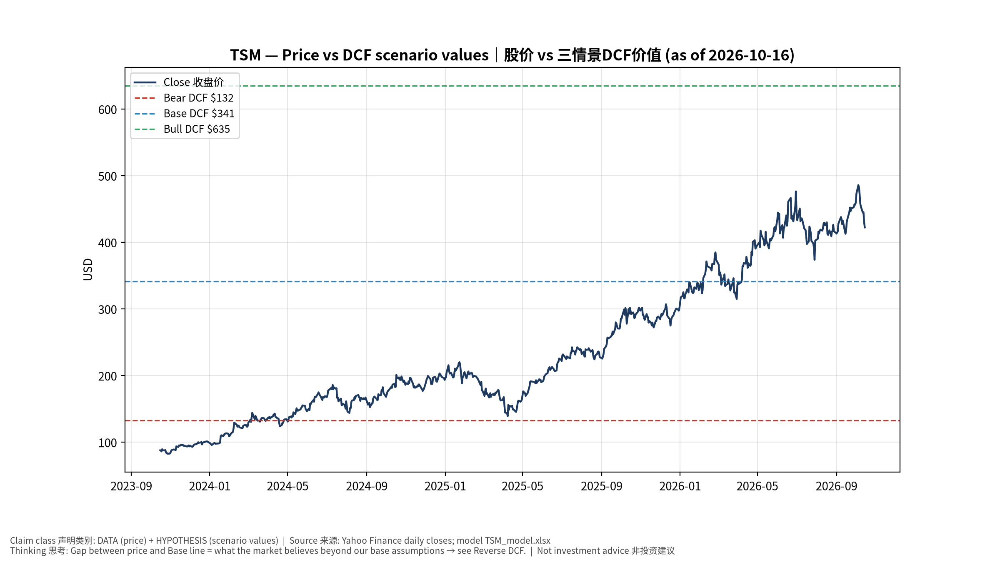
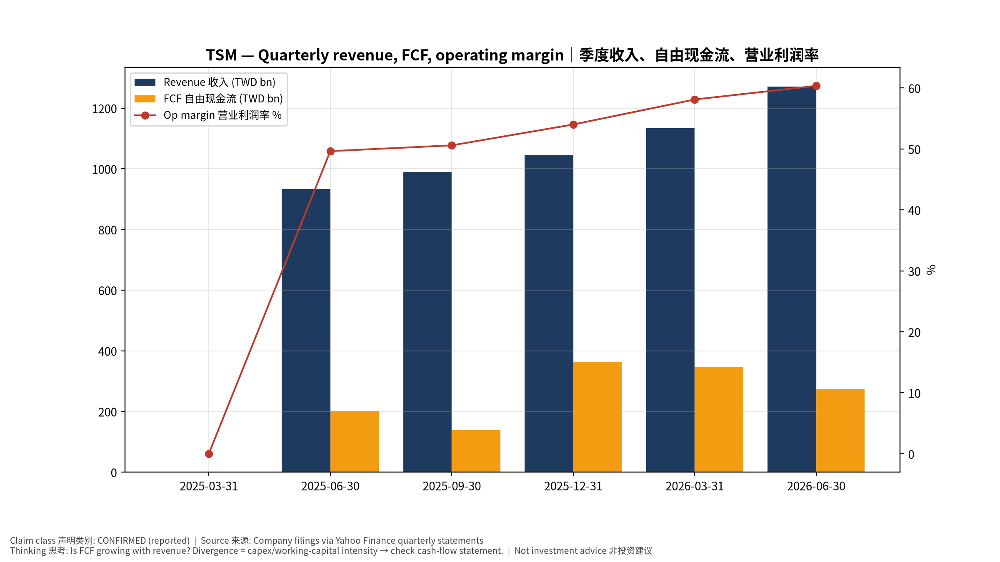
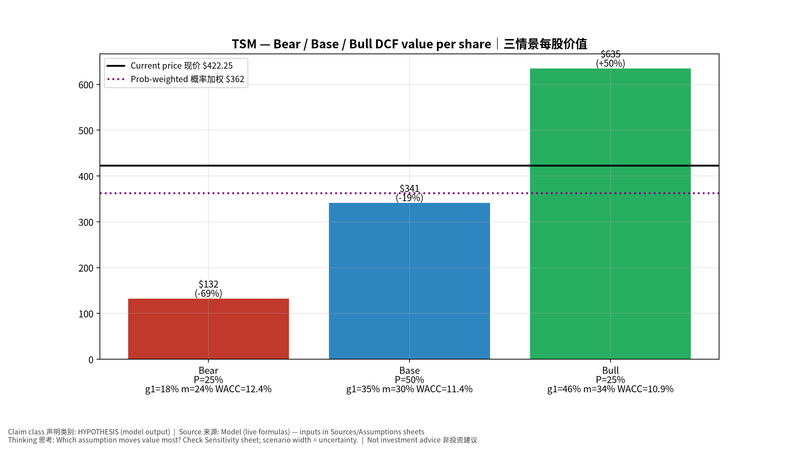
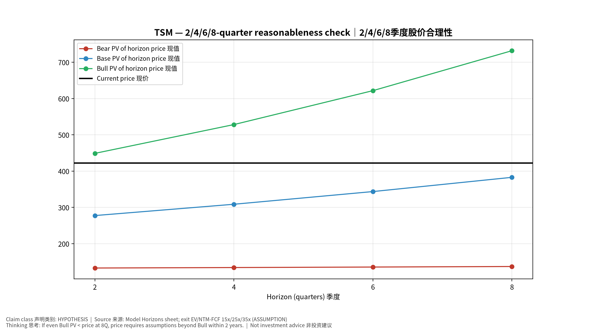
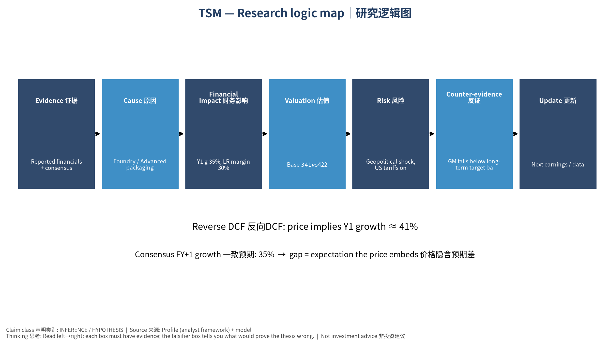

数据截至 2026-10-16 07:56 SGT｜价格 $422.25｜市值 2,190.0 bn USD｜财报货币 TWD｜非投资建议。事实=CONFIRMED/DATA；推断=INFERENCE；假设=ASSUMPTION/HYPOTHESIS。
台积电是AI芯片无可替代的制造瓶颈，拥有定价权；主要风险是地缘政治与海外厂毛利稀释。财报以新台币计。
| 季度 | 收入 | 毛利 | 营业利润 | 净利润 | FCF | 营业利润率 |
|---|---|---|---|---|---|---|
| 2026-06-30 | 1,270.4 bn TWD | 860.3 bn TWD | 766.6 bn TWD | 706.6 bn TWD | 275.0 bn TWD | 60.3% |
| 2026-03-31 | 1,134.1 bn TWD | 751.3 bn TWD | 658.9 bn TWD | 572.5 bn TWD | 347.3 bn TWD | 58.1% |
| 2025-12-31 | 1,046.1 bn TWD | 652.0 bn TWD | 564.9 bn TWD | 485.5 bn TWD | 364.0 bn TWD | 54.0% |
| 2025-09-30 | 989.9 bn TWD | 588.5 bn TWD | 500.7 bn TWD | 452.3 bn TWD | 138.4 bn TWD | 50.6% |
| 2025-06-30 | 933.8 bn TWD | 547.4 bn TWD | 463.4 bn TWD | 398.3 bn TWD | 199.8 bn TWD | 49.6% |
| 2025-03-31 | N/A | N/A | N/A | N/A | N/A | N/A |
资产负债: 现金 3,518.0 bn TWD；总负债 1,068.6 bn TWD；净现金 2,449.5 bn TWD。TTM FCF 1,124.7 bn TWD（FCF率 25.3%）。
| 季度 | EPS实际 | EPS一致预期 | 超预期% |
|---|---|---|---|
| 2025-12-31 | 3.14 | 2.97556 | 0.0553 |
| 2026-03-31 | 3.49 | 3.33393 | 0.0468 |
| 2026-06-30 | 4.31 | 3.88658 | 0.1089 |
| 2026-09-30 | 4.6 | 4.52449 | 0.0167 |
| 期限 | 情景 | 期限价格现值 | 相对现价 |
|---|---|---|---|
| 2Q | Bear | $132.89 | -68.5% |
| 2Q | Base | $277.41 | -34.3% |
| 2Q | Bull | $448.79 | 6.3% |
| 4Q | Bear | $134.19 | -68.2% |
| 4Q | Base | $308.58 | -26.9% |
| 4Q | Bull | $528.12 | 25.1% |
| 6Q | Bear | $135.58 | -67.9% |
| 6Q | Base | $343.56 | -18.6% |
| 6Q | Bull | $621.62 | 47.2% |
| 8Q | Bear | $137.03 | -67.5% |
| 8Q | Base | $382.77 | -9.3% |
| 8Q | Bull | $731.68 | 73.3% |
| 现价隐含的 EV/NTM-FCF (Base 路径): | 期限 |
|---|---|
| 2Q | 36.6x |
| 4Q | 31.0x |
| 6Q | 26.2x |
| 8Q | 22.1x |
解读: 如果8季度后Base情景所需倍数仍远高于25x，说明价格依赖更远期的增长。
| 情景 | Y1增速 | 长期FCF率 | WACC | 永续g | 概率 | 每股价值 | 相对现价 |
|---|---|---|---|---|---|---|---|
| Bear | 17.6% | 24.0% | 12.4% | 2.5% | 25.0% | $132.47 | -68.6% |
| Base | 35.2% | 30.0% | 11.4% | 3.0% | 50.0% | $341.27 | -19.2% |
| Bull | 45.8% | 34.5% | 10.9% | 3.5% | 25.0% | $634.70 | 50.3% |
概率加权价值 $362.43（相对现价 -14.2%）。
DCF Base: EV 54,784.3 bn TWD；终值占比 56.2%。
Reverse DCF 反向DCF: 在Base利润率与WACC下，现价隐含Y1收入增速 ≈ 41.4%；一致预期FY+1增速 35.2%。
WACC (CAPM) = rf 5.2% + β 1.24 × ERP 5.0% = 11.4%。
SOTP segments 分部: HPC/AI 高性能计算; Smartphone 智能手机; IoT/Auto/DCE 其他. Status: framework only — segment revenues are INPUT REQUIRED from the latest 10-K/10-Q segment note (not auto-fed, left blank to avoid fabrication)｜分部收入需按最新财报手动录入，未自动填充以避免编造。
同业比较 Comps (DATA): | Ticker | 市值 | EV/Sales | Fwd P/E | 收入增速 | 毛利率 | FCF收益率 | |—|—|—|—|—|—|—| | TSM | 2,190.0 bn USD | 3.5x | 18.4x | 36.0% | 64.2% | 1.6% | | INTC | 504.1 bn USD | 9.1x | 45.3x | 25.4% | 38.9% | 1.0% | | 005930.KS | 1,367,503.8 bn USD | 2.5x | 2.9x | 130.0% | 57.5% | 5.1% | | UMC | 52.5 bn USD | -0.1x | 23.8x | 17.0% | 30.6% | 70.3% | | GFS | 27.2 bn USD | 3.8x | 18.5x | 5.8% | 27.1% | 2.8% |
敏感度: 见Excel Sensitivity 表 (WACC ×
永续增长率)。
| Item | Value | Source/time |
|---|---|---|
| Price 股价 | 422.2 | Yahoo Finance quote, fetched 2026-10-16T07:56 SGT |
| Market cap 市值 | 2.19e+12 | Yahoo info.marketCap 2026-10-16T07:56 |
| Cash 现金 | 3.518e+12 | Yahoo info.totalCash (latest filing) 2026-10-16T07:56 |
| Debt 负债 | 1.069e+12 | Yahoo info.totalDebt (latest filing) 2026-10-16T07:56 |
| Revenue TTM 收入 | 4.44e+12 | Yahoo info.totalRevenue (TTM, TWD) 2026-10-16T07:56 |
| FCF TTM 自由现金流 | 1.125e+12 | Sum of last 4 quarterly FCF (q_cash); quarters [‘2026-06-30’, ‘2026-03-31’, ‘2025-12-31’, ‘2025-09-30’] (TWD) |
| Beta | 1.239 | Yahoo info.beta (5Y monthly) |
| Risk-free 10Y 无风险利率 | 0.0519 | FRED DGS10 2026-10-14 |
| FX USD per TWD | 0.03093 | Yahoo FX quote |
| Consensus rev growth FY0 | 0.4493 | Yahoo revenue_estimate 0y |
| Consensus rev growth FY+1 | 0.3521 | Yahoo revenue_estimate +1y |
| Assumption | Value | Rationale |
|---|---|---|
| ERP 股权风险溢价 | 0.05 | ASSUMPTION: 5.0% house mature-market ERP |
| Beta clamp | [0.8,1.6] → 1.24 | ASSUMPTION: limit extreme betas |
| Tax rate (ROIC) | 0.18 | ASSUMPTION: blended cash tax 18% |
| Year-1 growth (Base) | 0.3521 | Consensus FY+1 revenue growth (Yahoo revenue_estimate ‘+1y’); capped at 100% |
| Growth fade | linear Y1→terminal by Y10 | ASSUMPTION |
| Starting FCF margin | 0.2533 | DATA: FCF TTM / Revenue TTM, floored -50% |
| Long-run FCF margin (Base) | 0.3 | ASSUMPTION (analyst framework, reached by Y5; see profile) |
| Bear/Bull Y1 growth multiplier | 0.5x / 1.3x | ASSUMPTION |
| Bear/Bull margin multiplier | 0.8x / 1.15x | ASSUMPTION |
| WACC adj Bear/Bull | +1.0pp / -0.5pp | ASSUMPTION |
| Terminal g Bear/Base/Bull | 2.5% / 3.0% / 3.5% | ASSUMPTION |
| Scenario probabilities | 25% / 50% / 25% | ASSUMPTION |
| Horizon exit EV/NTM-FCF Bear/Base/Bull | 15x / 25x / 35x | ASSUMPTION |
| Per-share conversion | value × fx ÷ market cap × price | METHOD: avoids ADR/share-class mismatch |
TSM_model_v20261016-0756.xlsx (live
formulas; sheets
Inputs→Scenarios→DCF→ReverseDCF→Sensitivity→Horizons→SOTP→Comps→ROIC_WACC→History→Sources→Assumptions)production/pipeline/model.py (Python mirror;
values in this report = Python mirror, verified against LibreOffice
recalculation of the xlsx)data/snapshots/20261016-0756 (immutable)
| Fetched 2026-10-16 07:56 SGT | Generated 2026-10-16 07:57 SGT
股价vs三情景价值 Price vs scenario values

季度财务 Quarterly financials

三情景 Scenarios

2/4/6/8季度检验 Horizon check

研究逻辑图 Logic map
Data as of 2026-10-16 07:56 SGT | Price $422.25 | Mkt cap 2,190.0 bn USD | Reporting currency TWD | Not investment advice.
TSMC is the irreplaceable manufacturing bottleneck for AI chips with pricing power; key risks are geopolitics and overseas-fab margin dilution. Financials are reported in TWD.
| Quarter | Revenue | Gross profit | Op income | Net income | FCF | Op margin |
|---|---|---|---|---|---|---|
| 2026-06-30 | 1,270.4 bn TWD | 860.3 bn TWD | 766.6 bn TWD | 706.6 bn TWD | 275.0 bn TWD | 60.3% |
| 2026-03-31 | 1,134.1 bn TWD | 751.3 bn TWD | 658.9 bn TWD | 572.5 bn TWD | 347.3 bn TWD | 58.1% |
| 2025-12-31 | 1,046.1 bn TWD | 652.0 bn TWD | 564.9 bn TWD | 485.5 bn TWD | 364.0 bn TWD | 54.0% |
| 2025-09-30 | 989.9 bn TWD | 588.5 bn TWD | 500.7 bn TWD | 452.3 bn TWD | 138.4 bn TWD | 50.6% |
| 2025-06-30 | 933.8 bn TWD | 547.4 bn TWD | 463.4 bn TWD | 398.3 bn TWD | 199.8 bn TWD | 49.6% |
| 2025-03-31 | N/A | N/A | N/A | N/A | N/A | N/A |
Cash 3,518.0 bn TWD; debt 1,068.6 bn TWD; TTM FCF 1,124.7 bn TWD (FCF margin 25.3%).
| Quarter | EPS actual | EPS consensus | Surprise |
|---|---|---|---|
| 2025-12-31 | 3.14 | 2.97556 | 0.0553 |
| 2026-03-31 | 3.49 | 3.33393 | 0.0468 |
| 2026-06-30 | 4.31 | 3.88658 | 0.1089 |
| 2026-09-30 | 4.6 | 4.52449 | 0.0167 |
| Horizon | Scenario | PV of horizon price | vs current |
|---|---|---|---|
| 2Q | Bear | $132.89 | -68.5% |
| 2Q | Base | $277.41 | -34.3% |
| 2Q | Bull | $448.79 | 6.3% |
| 4Q | Bear | $134.19 | -68.2% |
| 4Q | Base | $308.58 | -26.9% |
| 4Q | Bull | $528.12 | 25.1% |
| 6Q | Bear | $135.58 | -67.9% |
| 6Q | Base | $343.56 | -18.6% |
| 6Q | Bull | $621.62 | 47.2% |
| 8Q | Bear | $137.03 | -67.5% |
| 8Q | Base | $382.77 | -9.3% |
| 8Q | Bull | $731.68 | 73.3% |
| Current-price implied EV/NTM-FCF on Base path: | Horizon |
|---|---|
| 2Q | 36.6x |
| 4Q | 31.0x |
| 6Q | 26.2x |
| 8Q | 22.1x |
| Scenario | Y1 growth | LR FCF margin | WACC | Terminal g | Prob. | Value/share | vs price |
|---|---|---|---|---|---|---|---|
| Bear | 17.6% | 24.0% | 12.4% | 2.5% | 25.0% | $132.47 | -68.6% |
| Base | 35.2% | 30.0% | 11.4% | 3.0% | 50.0% | $341.27 | -19.2% |
| Bull | 45.8% | 34.5% | 10.9% | 3.5% | 25.0% | $634.70 | 50.3% |
Probability-weighted value $362.43 (-14.2% vs price).
Comps.Sensitivity (WACC × terminal
g).Geopolitical shock, US tariffs on chips, Intel/Samsung regain share｜地缘冲击、美国芯片关税、英特尔/三星夺回份额 | Falsifiers: GM falls below long-term target band; monthly revenue y/y decelerates sharply; capex cut｜毛利率跌破长期目标区间；月营收同比骤降；Capex下修
See tables above (shared, bilingual). - Model file:
TSM_model_v20261016-0756.xlsx (live formulas; sheets
Inputs→Scenarios→DCF→ReverseDCF→Sensitivity→Horizons→SOTP→Comps→ROIC_WACC→History→Sources→Assumptions)
- Engine: production/pipeline/model.py (Python mirror;
values in this report = Python mirror, verified against LibreOffice
recalculation of the xlsx) - Data snapshot:
data/snapshots/20261016-0756 (immutable) | Fetched
2026-10-16 07:56 SGT | Generated 2026-10-16 07:57 SGT - Version:
v20261016-0756. Prior versions are never overwritten (see company
history page).